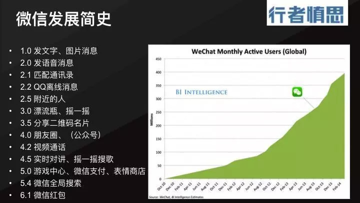
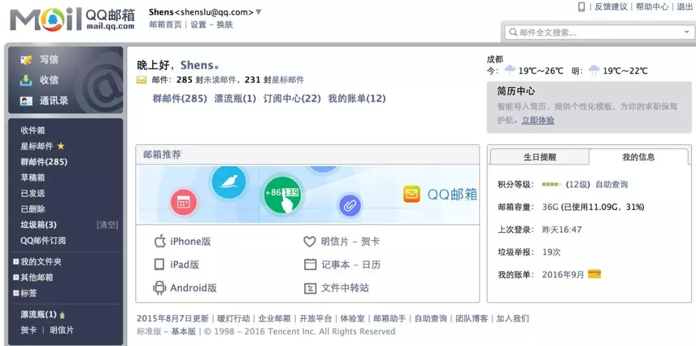
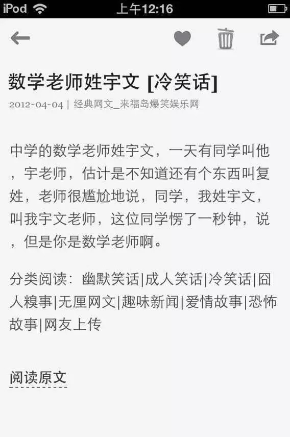

Table of Contents
转自36kr 《微信发展简史：微信成功的必然和偶然》
这篇文章讲到了几个产品的思路和点，自认为还是挺深入的，所以转过来，反复研读思考，理解产品哲学。
1 微信发展简史：微信成功的必然和偶然
陆树燊 • 2018-05-27 • 大公司
致敬微信7年
编者按：本文首发于微信公众号“行者慎思”（ID: shensing）。作者陆树燊，创业者，微信创始团队成员。
微信是互联网圈永远的热点，这不，这两天突然微信又成了话题中心，原因有两个：
- 微信更新版本，做了一个『浮窗』，有了这个小小的浮窗，用户可以在聊天和阅读文章之间随时切换；
- 有人把7年前微信刚上线时App store各种一星差评的截图发出来，整个科技圈投资圈都在惊叹：原来成功者当年也是很落魄的（这个鸡汤真好喝）。
作为微信创始期的亲历者，我想到了一些不同的东西。本文源自2016年9月我在一次产品经理社群分享中的演讲稿。当时已有不少听众把我的一些观点做了笔记发在公共媒体，但现场讲稿却在我的电脑里存放了一年半。
现在把讲稿整理出来，做了一些修改，希望能帮大家还原出一个不一样的微信发展史。也算是对7岁的微信宝宝一个致敬吧。
本文分为三部分：
- 微信发展简史；
- 微信的前身；
- 微信成功的必然和偶然。
1.1 一、微信发展简史 ATTACH
微信是如何一步步变成今天这个样子的？
微信在上线433天的时候，用户数达到1亿，上线2年的时间，用户数达到3亿，这是非常可怕的增长速度——相对于在此之前的所有PC互联网产品，这是绝无仅有的。
这样一个几乎可以称为『抛物线增长』的产品，它的发展路径中每一步，其实都是非常有关联的。
下图右边是微信在全盛时期14年2月之前的活跃用户增长情况。左边，是从微信1.0到6.1的每个版本的发展次序。

从1.0版本到2.0版本，这两个版本微信的发展平淡无奇。1.0版本微信主打能发文字、发图片，可以免费替换移动运营商的短信和彩信。早期微信的用户活跃度并不高，或者说，微信跟米聊、Kiki等同类，甚至是跟手机QQ相比，并没有什么竞争力的。
大家看到的那么多一星差评就是这个时候了。
微信迎来第一波用户增长是在2.0版本发布了语音功能。这个功能是来自香港的 Talkbox率先在智能手机中做出来的，但很快国内外的米聊、微信、Whatsapp等都迅速跟进。
从2.1、2.2、2.5、3.0到3.5版本，这几个版本微信在干什么事情？其实就是一件事：让用户可以不断地去添加好友。
- 熟人关系链
首先，通过匹配通讯录的功能，微信把用户手机里的这些好友都加进来了；通过QQ离线消息，微信把QQ的用户也拉进来了。
当然，从最开始，微信就是允许用QQ账号直接登录微信的，但此前这个特性并没有让微信在和米聊等竞争时有优势，但一旦微信的功能更全面之后，这种账号优势是巨大的。
- 陌生人关系链
2.5版本微信做了附近的人，3.0版本做了漂流瓶、摇一摇。
这些都是陌生人社交功能，微信给用户提供了一种通道，与附近的、远方的有缘分的陌生人成为朋友。
那时候很多人评价微信为『约炮神器』。
实际上真正著名的（已洗白的）神器：陌陌，也差不多在那个时候发布的（2011年6月）。
那时候所有人都在讲这种LBS社交（基于地理位置的社交服务），其实是有原因的，因为智能手机的出现和普及，让随时随地确认用户的地理位置成为可能（这在PC时代是不可能的），那么人们就能够自然地从远程网络的社交中识别出那些离用户最近的、能够产生更多线下互动的其他用户。
当时还有一个非常火热的概念，叫『弹性社交』，用户到达一个位置之后，就能和那个位置附近的人聊天，美国有一个全明星创业者团队就做了一个这样的产品叫『Color』，但很快就死了。
微信又是因为什么去做这样的功能呢？
对一个聊天工具来讲，每个用户在上面能做的事情不就是跟别人聊天吗？但是，当一个用户第一次安装微信，并把手机通讯录里的、QQ里那些已经使用微信的好友们导入进来，一开始他也就只有几个好友，这样是聊不起来的。
微信只有不断的给他们之间制造一些可以聊的话题、一些可以聊的场景，才能让他们留下来。所以这时候，附近的人、漂流瓶、摇一摇等场景就应运而生了。
微信在附近的人和漂流瓶、摇一摇在几个功能发布之后，用户数就实现了暴涨，并把国内同行都远远地抛下了，奠定了在国内移动端通信App中的巨无霸地位。当然上面的数据图中，因为后期数据增长太庞大，所以基本把初期的前几波『暴涨』给掩盖掉了。
为什么微信在做了陌生人社交之后，用户量就飙升了呢？
最简单的一个解释，就是对于一个全民通用的App来讲，它首先要做的，就是打动人性中最根本的需求。这方面，相信大家都听说了微信摇一摇设计中的故事了，这里就不细说了。
- 线下关系链
接下来的3.5版本，微信做了分享二维码名片。有了二维码名片，我们每个人在线下见面时就很容易借此互相添加好友了，从熟人，再到陌生人，线下的关系链一一导入到微信中来。
我们现在在社交场合中遇到新朋友，都不再是交换名片，而是说『加个微信吧』，然后打开扫一扫，说『我扫你吧』，等着他打开二维码。
大概在发布这个版本之后，微信用户达到一亿。
- 盘活关系链
在4.0版本微信做了『朋友圈』。
在此之前，微信只是一个即时通信工具，而在一个聊天工具里面去做社区，在全球互联网历史上其实是没有过的。
对于微信，这是一个非常大胆的尝试。
但为什么要做呢？
前面说到，此时用户数已经有一个亿了，一个亿的用户在这个App里面，他们每个人各自添加了不少好友，比如失散多年的小学同学，比如前阵子在某个大会认识的某大咖……但是加了好友之后，我们却从来没有机会聊天。慢慢地，我们都不知道对方是谁了（或者是否还活着？）。如果无缘无故强行去聊（撩），就成了『尬聊』了，大概对方就要把你拉黑了。
这种事也不是微信中才有的，我们还记得，在微信出来之前，我们每年过年、过节的时候通常都会收到各种朋友的祝福短信的轰炸。为什么很多明知群发短信别人不看、不回，甚至会很烦，但还是要发？因为有太多的『沉寂人脉』，好不容易找个理由和他们打个招呼，告诉他们『我还活着』，当然不能错过。
所以这时候需要朋友圈的出现，给这个问题画了一个非常完美的句号。
有了朋友圈，我们每天在朋友圈发布的内容，微信好友是能看到的。也许他跟你没有太多共同话题，但他至少可以点赞表示下存在感，表示一下他对你的关心。于是通讯录里的陌路人升级为『点赞之交』。
而且你还会从某些朋友的朋友圈动态的点赞列表中发现：『咦，你们两个人是怎么认识的？』于是就有了一种『三角好友关系』。
这也促进了人与人之间的更多连接，因为有了更多共同的话题、共同的信任。原本人与人之间在网络中都只是单线联系，但是有了微信的朋友圈，人与人之间就变成一个三角更密集的网络关系了。每个人都成了这张密集网络中的一个重要结点。这样的网络，当然也就更稳固了。
还有一种更普遍的情况，有了朋友圈，我们很容易及时更新朋友们的信息，找到共同的话题。比如我们常见的朋友圈评论：『你去泰国了呀，好不好玩？』、『生日快乐！』、『新婚快乐！』、『加班到现在么？』、『这么晚还不睡』……
在我看来，如果说微信在做了陌生人社交功能之后奠定了它的移动互联网巨头地位，那么，朋友圈就是一个让这种巨头地位永久固化的功能。微信生态圈在此时已经完成了，后续的其他功能虽然也有其重要意义，但都是建立在微信已经站稳脚根的前提下，也就是所谓『第一张移动互联网船票』。
这里需要提一下公众号。我前面整理的版本更新列表中没有『公众号』，因为当时公众号并没有专门发布的客户端版本，而是 原来预埋在App中，大概在微信 4.0版本发布前后开始上线功能。
微信单聊群聊、微信公众号、微信朋友圈，至此形成了一个信息传播的闭环，至今我们依然每天活在这个闭环的信息轰炸中。
- 商业化
5.0版本，微信发布了游戏中心、微信支付和表情商店。
我之前的文章《支付大战简史：微信支付 vs. 支付宝》中写道：
13年初，在腾讯公司年会上，公司总裁刘炽平跟全公司员工说“2013年是微信的商业化元年”。这一年，微信发布了微信支付、游戏中心、表情中心，三个志在让微信实现商业化的产品。
1）游戏是腾讯公司历来的营收重点，借助微信的大用户量、高活跃度和强关系链，这种优势也从PC端迁移到手机端；
2）表情包在QQ时代就一直是中国网民的爱好，但并没有给腾讯带来很好的营收，但是微信的日本同行Line成功地通过表情赚得盆满钵满。于是微信就努力地试试，结果并不好，中国果真和日本不一样，网民不愿意为表情付费的习惯到了移动端依然没有改变——所以微信表情现在基本转为免费策略；
3）而支付就是腾讯成功逆袭的一条战线了。
今天我们可以看到，游戏中心确实是很成功的，给微信赚了很多钱，也帮腾讯股价实现了大规模上涨。而微信支付也在2016年实现了盈利。
- 插件化
从前面的五个步骤看起来，似乎微信从一开始就设计好了路径：导入熟人关系链、陌生人关系链、线下关系链，盘活关系链、商业化。
其实不然，微信并不是从一开始就是有一个完整的战略思考，每个功能都是到了具体阶段，根据需要去补充的。
在这些功能迭代的过程中，微信最成功的地方是，它的整个界面、整个业务结构、功能结构几乎没怎么改变。这是因为微信在增加功能时，充分考虑了这些功能的向后兼容性，只做当时最最最需要的那一项功能，而不是贪多求全。
微信的功能越来越多，却一点而不臃肿，要知道，这是QQ长期以来被诟病的地方。
这主要靠插件化。
微信早期的功能都是用一个个插件的形式存在的。插件你是可以随时安装可以卸载。再后来有了公众号，微信一下子就有了更多神奇的功能，公众号这种相当于一个可装卸的功能插件。
（作者注：而现在又有了小程序平台。这更是一种全功能的插件平台。关于插件，我在文章《微信团队的实验室文化》中有详细的讲述。关于小程序的插件化价值，我的文章《小程序的前世今生（一）：为谁而生？》中也有说明。）
微信所走的路，是没有人走过的路。
在微信的成长过程中，参照了很多同行（甚至非同行），但最终走出来的是微信自己的路，并且迎来了国内外的各种抄袭、复制、模仿者——手机QQ、微博、来往、易信、支付宝、Facebook……
1.2 二、微信的前身
可能你看到『前身』这两个字觉得很奇怪，微信为什么有前身？
这就是QQ邮箱。微信所有的成功都建立在QQ邮箱的成功和失败上面。
1.2.1 1、微信的起源
故事要从2010年美国出现的一个叫做Kik的App开始讲起。
那个时候Kik用了一个月的时间获取了一百万的用户，震惊了全世界。这种用户增长速度是前无古人的，算是移动互联网的第一个奇迹。
很巧的是，QQ邮箱团队当时正在着手开发一个叫做『手中邮』的App，也就是QQ邮箱的移动版。
邮箱团队的负责人张小龙看到Kik这个奇迹之后，马上发了邮件给马化腾（Pony），说这个东西我们应该做。Pony同意了，把它命名为『微信』。
于是邮箱团队就着手从『手中邮』转向微信的开发，这就有了微信的第一版。
微信这个名字很有意思，微型的邮件，这个名字非常确切。由于微信是邮箱团队开发的，为了快速实现，尽可能复用了原先QQ邮箱的整个后台协议和框架，所以背后的通信协议采用的也是邮箱的HTTP协议，而不是通常即时通讯工具所用的UDP协议。所以我们每次发送一条微信消息，就真的是在通过微信后台向朋友发送一封微型的邮件。
1.2.2 2、微信与QQ邮箱的亲缘关系 ATTACH
2005年，腾讯公司收购了张小龙创办的Foxmail团队，让他负责QQ邮箱的开发，一直做到2010年。于是这整个五年的过程中，这个团队一直在锻造QQ邮箱。这款产品后来在腾讯内部叫做七星级邮箱。
当然，在这个过程中，邮箱做了非常多的尝试。
我给大家复习一下，看看QQ邮箱长什么样子（2016年9月截图）：

在这个邮箱界面，我们仔细看看这些功能，再看看手中的微信，是不是有些异曲同工之处？
1）漂流瓶。微信里的漂流瓶就源自于QQ邮箱的漂流瓶。
2）QQ邮件订阅以及已经下线的『阅读空间』。它们是微信公众号的前身。是不是有点像？通过邮件去订阅一些博客，或者朋友的QQ空间，就像我们现在通过公众号去关注一些媒体、大咖、朋友的公众号一样。
3）QQ邮箱以前还有一个功能，可以在邮箱里面和QQ好友聊天。大概在2009、2010年的时候，那时还没有Web微信，我还经常在公共电脑用这个功能和朋友聊QQ。这个功能后来搬进微信里，就成了『QQ离线消息助手』。
4）微信曾经尝试过一个『短消息』的功能，可以给QQ邮箱上的好友发一些比较简短的一些信件，就已经跟今天的微信单聊消息很像了。
5）曾经还有过一个功能叫作『广播』。广播比新浪微博稍晚上线，比腾讯微博都要早一年多时间上线，当时就是希望把Twitter给复制到中国来。这个功能后来因为腾讯集中全公司的火力去做腾讯微博，所以就放弃了。但是，正是因为『广播』，邮箱团队才第一次开始尝试去做社区功能。在此以前这就是只是一个邮箱，大家对邮箱的理解就是一个工具软件，在这里发邮件收邮件，然后就走了。也正因为有了广播的尝试和失败，才有了后来在朋友圈的一战成功。
6）邮箱有记事本功能，微信有语音记事本插件。
7）邮箱有『文件中转站』，相当于邮件的附件收藏夹，于是微信有了『收藏』。
8）甚至，邮箱有标签功能，给邮件打标签，微信在提供好友分组功能时，提供的也是标签功能。
……
如果你仔细去发现，还能发现其他的相似之处。
1.2.3 3、阅读空间的移动化 ATTACH
我们知道2005年上线的QQ空间从诞生之日起就被贴上了低龄化的标签，在空间上面，有各种音乐、装扮、背景、荧光体字体之类，很适合初中生高中生的喜好。而当时最早QQ空间的前端技术是比较差的，所以体验很不好。
但随着用户的长大，原来的中学生，也慢慢上了大学，毕业成了白领，他们就不太喜欢这些花哨的东西了。怎么解决这个问题？
于是邮箱团队就做了阅读空间（功能如其名），方便用户只看好友的文章内容，不看各种花哨的摆设，这样体验就好很多了。
后来，又引入了订阅网络上的博客的功能，类似于Google Reader。
我是在这个2011年加入QQ邮箱团队的，最开始就在『阅读空间』项目组工作，而当时微信也还只是邮箱团队中另一个项目组的产品。
当时我们团队就在想，阅读空间能不能也独立做成个移动App？说干就干，这个项目唯一的产品经理兼客户端开发就是我了（早期的时候我还兼任了设计师，随意P图）。当时内部定了个名字叫『微杂志』。
Demo做好了，小龙一看，不如把它合并到微信里面吧，于是就有了微信里面的两个插件，一个叫腾讯新闻 ，一个叫微博阅读。结合公司当时的资源，把腾讯新闻、腾讯微博上的内容抓取过来集合在插件里面，推送给用户。腾讯微博后来停止服务了，所以微博阅读插件就不在了，而腾讯新闻插件现在还在，它给腾讯新闻带来了非常好的流量，也因此造就了腾讯新闻客户端在移动互联网的辉煌。
有了这两个插件，团队就在想，是不是可以把这种能力开放给所有的媒体？于是就有了公众平台。
最早的时候，公众平台不是这个名字，叫媒体平台。我们都知道微信公众平台的网址是『mp.weixin.qq.com』，这个mp，就来自于媒体平台『media platform』的缩写。
后来，又把它改成『官号平台』，取『官方账号』之意。当时还想，不只是媒体可以来发内容，还可以邀请一些明星过来，最早的时候引入了像陈坤、王力宏、杨幂等等这些明星来发内容，早期的用户可能还有印象。杨幂的粉丝关注了她的公众号，她就会给你发一段语音（当然是自动回复的语音），粉丝都很开心。
再后来，觉得这事格局还不够大，就改叫『公众平台』了——口号是『再小的个体，也有自己的品牌』。于是公众平台就诞生了。
这里还有一个小插曲，我们经常看公众号文章，官方限制了在文章内容嵌入链接，所以如果要加链接的话，就要加在最底下的『阅读原文』里面。
有没有人想过，为什么叫阅读原文，这不是很奇怪么？不是应该叫『相关链接』之类么？
这是因为当时公众平台的内容模板用的是我之前做『微杂志』的模板，而微杂志的模板又是因为做的是博客内容抓取，为了方便用户回溯去看原网址，也为了尊重原作者，给他带回去流量，所以在底下加了一个『阅读原文』的链接入口。
这个坑就一直留到了现在。

『微杂志』早期的截图
1.3 三、微信成功的必然和偶然
微信的成功是有必然性的，也是有偶然性的。
必然在哪？
因为它有腾讯这个爹，所以有了实现用QQ账号直接登录、和QQ打通实现离线消息、邮箱本身的推广资源、腾讯母体的平台运维支持、腾讯一向在即时通讯的经验等，这些都是行业内其他竞争对手无法想像的支持。
但这些必然性就导致了经常有人说：如果把张小龙换成雷军，换成其他任何人，他都能做出微信来。
这样说是非常不负责任的。因为微信的成功，它有两个方面：
首先，微信在移动端做成了一个类似QQ在PC端那样的全民级通讯平台，这是微信成功的第一方面。这方面的成功，靠腾讯的亲儿子这一点，应该是非常大的概率能做到。
但另一方面，微信已经远远不只是一个聊天工具，它的地位实际上已经远远超过了QQ，成了一个操作系统，全民每天平均有超过40%的时间花在微信里面。另外，微信覆盖了QQ无法覆盖的高端人群，也实现一定程度的国际化，这也是QQ一直无法做到的。而且微信借助它的创新，还引来了大量的国外同行的模仿，这是原来更无法想像的事。
一个产品做到这种程度的成功，就远不是有资源支持就能够做到的了。
下面我来讲讲微信成功的5个偶然。
1.3.1 1、第一个偶然：没有负担
很多人都听说过了，当年微信初创时，腾讯公司里面有几个团队都在做微信类的产品。但是，邮箱团队原本是没有做移动App的经验的，而另外两个团队，他们都属于无线事业群，原本就是专门负责移动应用的开发的。
理论上，他们应该比邮箱团队更有经验。但是，他们受制于另外一个因素：腾讯无线当时有很大比例的收入来自于移动运营商，市面上有微信类的产品出来后，中国移动就和腾讯无线打招呼，不允许上线这样的产品，别人可以做，但你们是大公司，你们就是不可以。
所以当时无线团队是束手束脚的，非常谨慎地在做。后来我们看到，像QQ通信录里面加了一个Q信，就是这样的妥协下的产品。所以当然他们是成功不了的。
而邮箱团队由于不归无线团队节制，加上小龙的魄力、Pony的支持，大胆开发，大胆上线，才有了今天的微信。
1.3.2 2、第二个偶然：种子用户群
早期做微信的时候，其实并不像大家想像的那样，受到QQ的支持。最早微信的用户，基本来自于团队自己的产品，QQ邮箱。
有两个来源：一个是QQ邮箱的首页，放了一个微信的广告。另一个就是在微信里面引导用户发邮件去邀请好友加入微信。
也正是因为最早的来源是QQ邮箱，而不是QQ，所以早期的微信用户比较『高端』——QQ邮箱由于长期的体验优化，已经获得了很多上班族的喜爱。这些从早期喜欢花哨的QQ秀、QQ表情的年轻人，已经走出校园，走进职场，喜欢上了简洁、专业的风格。
物以类聚，人以群分。早期的用户属性很大程度也影响了社交产品的调性和口碑。于是微信是最早是在他们中传开的。
1.3.3 3、第三个偶然：极致追求
如果没有张小龙和整个微信团队追求极简体验的格调和品味，那么微信从文案、图标到功能定义，都有可能落到像QQ一样，整天去宠着用户、惯着用户，又要想办法让用户花钱：今天改改皮肤，明天加个QQ秀，后天搞这个钻、那个钻、会员、积分、星星、月亮……然后再一会改来一会改去，折腾用户。
这些个性化的、商业化的功能不是不好，对小朋友就应该这样，但这样做的话，就不可能吸引得了高端用户，微信也不可能有今天的成功。
我们都知道以前白领们，特别是外企员工，是不屑于用QQ的，他们聊天只用MSN。今天，MSN已经销声匿迹了，米聊这样强劲的对手也黯然退下战场，手机QQ下了狠心把微信抄了一遍，这些都和微信的『极简』追求有莫大关系。微信的这种『性冷淡』偏好，甚至影响了今天整个中国的移动互联网。
1.3.4 4、第四个偶然：远离总部
微信的成功还得益于，微信团队是在广州办公，而不是深圳办公。
这是一件很有趣的事。腾讯的总部在深圳，2012年的时候，腾讯公司大概有2万人，其中至少1万8千人是在深圳的，其他的城市分公司人都很少。其中广州邮箱团队只有不到200人。
但就是因为人数这么少，反而保持了它的精干，保持了它的纯粹，而不会被总部的各种人才流动打扰，实现了优秀人才的集中和长期合作。
我在互联网行业经历过的这些年，微信团队的优秀是超过我见过的任何其他团队的，特别是它的优秀人才的密集程度。
这个在我之前的文章《腾讯与阿里的区别，就像书生和土匪的区别》中提到：
微信团队（曾经的广州研发部）在腾讯公司中又极为特别，也许是因为远离总部，在微信做大之前，这里的升职、调动的机会并不多，人员流动很少，团队里隐藏了非常多低调却才华横溢的同事。在部门群里聊天，总是时不时就有人赋出诗一首，或者来一句让人拍案叫绝的金句，但在现实生活中，他们却常常少言寡语，默默在做好事情，专心的雕琢产品、代码、设计稿。
如果说微信团队的招聘有什么标准的话，以我的观察和总结，那么，这些人除了优秀之外，身上还必须有一个亮点，他才可能进入这个团队。在微信初期前三年，一直保持着极低的录用率，特别是到了后面快速发展期，还特别苛刻，『宁缺勿滥』，不肯降低标准。
1.3.5 5、第五个偶然：胆大心细
我前面提到，微信做朋友圈是一种非常大胆的尝试。朋友圈的实际对手，是微博，为什么呢？因为它们同样都在模仿Facebook，都在抢占国内这个『生态位』。
但在把聊天功能和社区功能放在一起是冒险的，就像Facebook后来就把Facebook Messager独立出来，但也没有很成功，新浪微博当初想要把微博私信打造成一个独立应用对抗QQ和微信，也没有成功。
另外一个案例，微信的早期对手米聊，很早就在产品中加入社区，自动同步用户改签名等动态。但最大的问题就是，在用户关系链没有沉淀好的情况下，做出来这个功能，最后整个动态区就变成了垃圾堆。
但微信胆大心细地做了。为了这个功能，微信团队整整花了半年的时间，内部尝试了40多个方案，才最终把朋友圈的方案定下来，一举成功，几乎没再有大的改动。
这个尝试的成功，本身也是偶然的。
2 总结：
一个产品的发展历程顺不顺利，除了它的产品策略，除了产品团队的实施过程之外，跟产品团队的基因、团队的积累、团队的管理方式、团队的行为方式，都有非常非常大的关系。
正是因为微信团队经历过了邮箱时期的各种功能尝试，不但积累了经验，还锻炼了团队，建立了团队的系统基础，才有可能在短短的一两年内做出了一个几亿级的明星产品。（关于微信团队如何打造成这个能打仗的团队，参见我的文章《微信团队的实验室文化》）
所以我前面说，微信所有的成功都建立在QQ邮箱的成功和失败上面，这种成功，有必然，更有偶然。而值得我们学习的，恰恰是那种偶然性。
关于创业者和微信生态上的产品经理如何去理解微信平台的规则，理解微信团队的思维方式，以及能从微信团队身上学习什么，我将在下篇文章（或者下下篇文章）讲述，欢迎关注。
作者陆树燊，小鸿科技COO，微信创始团队成员，产品哲学研究者。研究和实践方向：产品场景化和产业互联网企业管理，欢迎探讨和交流案例（微信: shensinside）